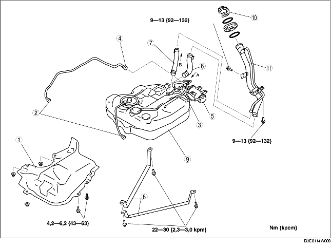

DEMONTERING/MONTERING AV BRÄNSLETANK [ZJ, Z6, LF]
B3E011442110W01
-
Varni ng
-
• Det är farligt att reparera en bränsletank som innehåller bränsle. Explosion eller brand kan leda till dödsfall eller svåra skador. Tvätta alltid ur bränsletanken med ånga innan den repareras.
1. Parkera bilen på en plan yta.
2. Följ 'FÖRSIKTIGHETSÅTGÄRDER FÖRE SERVICE' innan du utför några arbeten, så att inget bränsle kan spillas ut ur bränslesystemet. (Se FÖRSIKTIGHETSÅTGÄRDER FÖRE SERVICE [ZJ, Z6, LF].)
-
Varni ng
-
• En person som är uppladdad med statisk elektricitet kan orsaka en brand eller explosion, vilket kan orsaka dödsfall eller allvarliga skador. Se alltid till att statisk elektricitet laddats ur helt och hållet genom att röra vid ett fordon - innan något bränsle töms ut.
3. Töm ut bränslet ur bränsletanken med följande arbetsgång:
-
(1) Koppla ur snabbkopplingskontakten (i motorrummet). (Se DEMONTERING/MONTERING AV SNABBKOPPLING [ZJ, Z6, LF].)
-
(2) Fäst en lång slang vid det urkopplade bränsleröret och töm ut bränslet i en lämplig uppsamlare.
-
(3) Anslut WDS eller motsvarande till DLC-2.

-
(4) Slå på tändningen.
-
(5) Använd simuleringsfunktionen 'FP' och starta bränslepumpen.
-
Försiktigt
-
• Bränslepumpen kan drabbas av funktionsfel om den körs utan att det finns något bränsle i bränsletanken (bränslepump på tomgång). Övervaka mängden bränsle som töms ut kontinuerligt och stäng av pumpen omedelbart när bränslet i princip slutat rinna ut.
-
(6) När bränslet i princip slutat rinna ut ur slangen vrider du tändningslåset till läget LOCK.
-
(7) Lossa batteriets minuskabel.
4. Demontera baksätets dyna. (Se DEMONTERING/MONTERING AV BAKSÄTE)
5. Ta bort skyddet för serviceöppningen.
6. Koppla ur kontakten till bränslepumpen.
7. Demontera kolkanisterns skydd. (Se DEMONTERING/MONTERING AV KOLKANISTERN [ZJ, Z6, LF].)
8. Sänk ner huvudljuddämparen så att isolatorn kan tas bort. (Se DEMONTERING/MONTERING AV AVGASSYSTEMET [ZJ, Z6].) (Se DEMONTERING/MONTERING AV AVGASSYSTEMET [LF].)
9. Ta bort det bakre undre skyddet (vänster).
10. Demontera i den ordning som anges i tabellen.
11. Montera i omvänd ordning mot demonteringen.
12. Kontrollera alla delar genom att utföra "FÖRSIKTIGHETSÅTGÄRDER EFTER SERVICE". (Se FÖRSIKTIGHETSÅTGÄRDER EFTER SERVICE [ZJ, Z6, LF].)

.
|
1
|
Isolering
|
|
2
|
Snabbkoppling (framtill på bränsletanken)
|
|
3
|
Snabbkoppling (på vältventilen)
|
|
4
|
Snabbkoppling (på kolkanistern, sidan mot avluftningsventilen)
|
|
5
|
Kolkanister
|
|
6
|
Skarvslang
|
|
7
|
Ventilationsslang
|
|
8
|
Strap
|
|
9
|
Bränsletank
|
|
10
|
Tanklock
|
|
11
|
Bränslepåfyllningsrör
|
Observera vid demontering av bränslepåfyllningsrör
1. Ta bort höger bakhjul.
2. Ta bort stänkskyddet vid höger bakhjul.
3. Stötta upp den bakre tvärbalken med en domkraft.
4. Ta bort de bakre nedre stötdämparbultarna (höger). (Se DEMONTERING/MONTERING AV BAKRE STÖTDÄMPARE.)
5. Lossa fästmuttrarna för den bakre tvärbalken (6 platser) och sänk den bakre tvärbalken 30 mm {1,2 tum}. (Se DEMONTERING/MONTERING AV BAKRE TVÄRBALK.)
6. Ta av bränslepåfyllningsröret.
Observera vid montering av skarvslang
1. Montera skarvslangen och klämman så som figuren visar.
Observera vid montering av ventilationsslang
1. Montera luftningsslangen och klämman så som figuren visar.